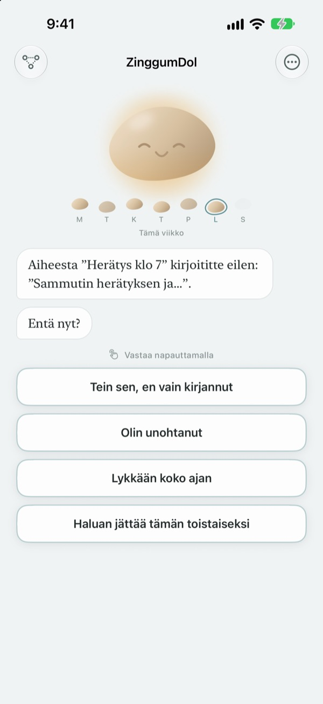
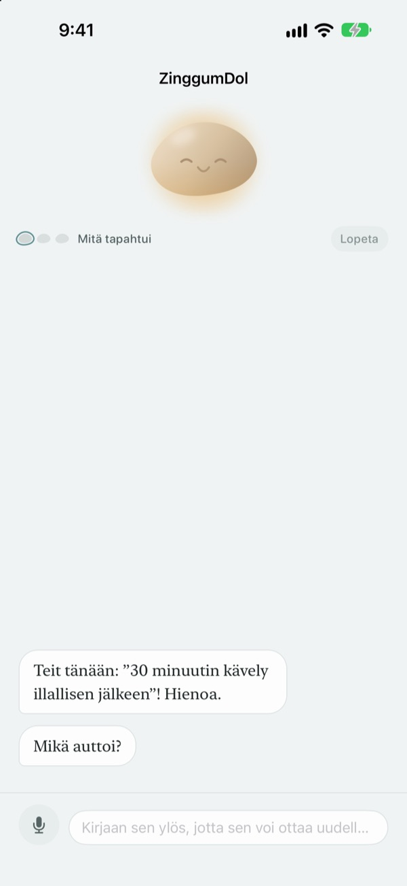
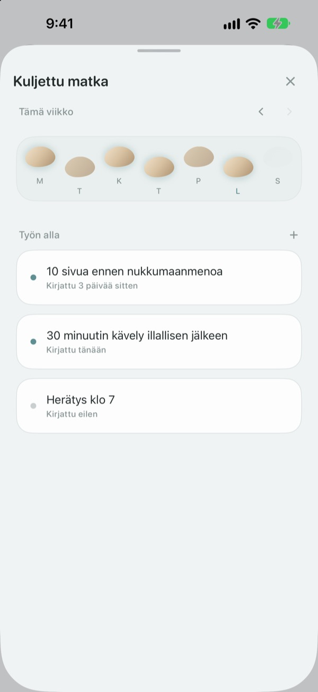
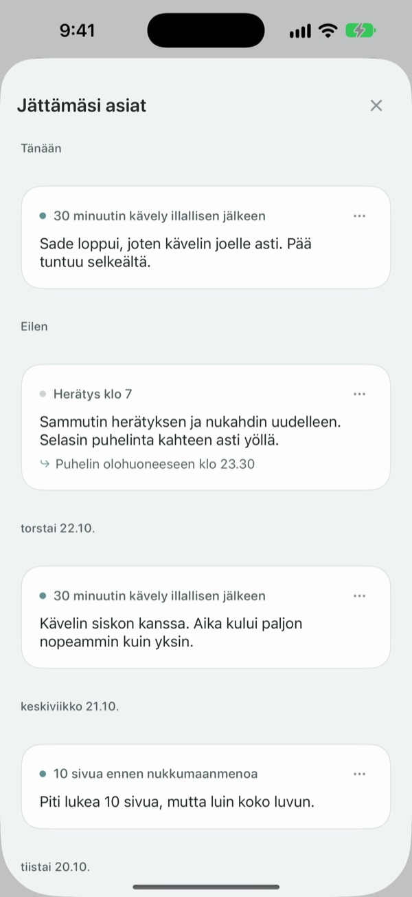

Harha-askel ei tarkoita,
että putosit puroon
Päivänä, jona tavoite jää saavuttamatta, kivi puhuu ensin. Se kysyy, mitä tapahtui, ei mitä teit väärin, ja antaa tapahtuneen ja tunteesi takaisin erikseen.
Keskustelut, merkinnät ja kulkemasi tie ovat ilmaisia. Ei tiliä, ei mainoksia.

Juttele kiven kanssa
Aioit lähteä tänään iltakävelylle, mutta se jäi. Napauta vastausta tai kirjoita omasi, niin kivi vastaa juuri kuten sovelluksessa.
Syytätkö itseäsi, kun päivä ei mene suunnitellusti?
Iltana, jona treeni jäi väliin, ensimmäinen ajatus on usein ”mikä minussa on vikana?”. Tarkemmin katsottuna oli ylitöitä, satoi ja olit aivan poikki. ZinggumDol kysyy eri vaiheissa, mitä tapahtui ja miltä sinusta tuntuu, ja asettaa ne rinnakkain. Kun huomaat, että syy oli olosuhteissa eikä tahdonvoimassasi, seuraava pieni askel löytyy helpommin.
Kivi puhuu ensin
Aseta tavoite, niin kivi pitää kirjaa päivistä, jolloin onnistuit, ja päivistä, jolloin jäit jumiin. Kun päivä lipsahtaa, se kysyy ”mitä tapahtui?” eikä ”miksi et?”, ja se muistaa, mitä kerroit viimeksi.
Jos kirjoittaminen tuntuu liialta, sano se ääneen. Puhe tunnistetaan laitteellasi, eikä äänitteitä tallenneta koskaan.

Päiväsi kuin astinkivet
Jokainen viikko on rivi astinkiviä. Myös päivät, joille et astunut, jäävät paikoilleen; mitään ei pyyhitä.
Vaikka välissä olisi aukko tai kaksi, näet, että polku jatkuu.

Lue uudelleen, mitä kirjoitit
Mitä tapahtui, miltä tuntui ja mitä kokeilet seuraavaksi kertyy päivämäärän mukaan. Lue päivä, jolloin jäit jumiin samalla tavalla, ja näet, mikä auttoi.
Widget näyttää kiven sanan Koti-valikossa, ja muistutus valitsemaasi aikaan kutsuu katsomaan päivää taaksepäin.

Alkuun kolmessa vaiheessa
- 1
Kirjaa yksi tavoite
Esimerkiksi ”30 minuutin kävely illallisen jälkeen”.
- 2
Avaa sovellus illalla
Kivi kysyy, miten päivä meni. Muistutuksen kanssa se ei unohdu.
- 3
Napauta tai kirjoita vastaus
Voit lopettaa milloin tahansa valinnalla
Haluan jättää tämän toistaiseksi.
Näin keskustelu etenee
- Mitä tapahtui
- Pelkät tosiasiat: mikä tuli väliin
- Tunne
- Miltä sinusta nyt tuntuu, viisiportaisella asteikolla
- Katse taaksepäin
- Kivi antaa tapahtuneen ja tunteesi takaisin erillään
- Seuraava askel
- Valitset itse jotain pientä, viisi minuuttia riittää
- Lopetus
- Todella raskaana päivänä se ei kysy enempää vaan ehdottaa lepoa
Voit lopettaa missä vaiheessa tahansa, ja siihen asti sanomasi säilyy.
Keskustelu ja kirjoittaminen ovat ilmaisia. Pro, jos haluat enemmän.
Ilmainen
- Kaikki keskustelut kiven kanssa
- Enintään kolme tavoitetta
- Puhu kirjoittamisen sijaan
- Kulkemasi tie ja kaikki kirjoittamasi
- Widget ja päivittäinen muistutus
- Lukitus koodilla
ZinggumDol Pro
- Niin monta tavoitetta kuin haluat
- Kuusi kiven pintaa valittavana
- Merkintöjen vienti tekstitiedostoksi
Osta kerran ja pidä. Ei tilausta.
Keskustelun keskelle ei koskaan ilmesty maksunäkymää. Uudella laitteella tai uudelleenasennuksen jälkeen napauta asetuksissa Palauta ostokset.
Usein kysyttyä
Pitääkö jokainen väliin jäänyt päivä selittää?
Ei. Napauta milloin tahansa Haluan jättää tämän toistaiseksi, niin keskustelu päättyy siihen. Sanomasi säilyy, joten voit jatkaa myöhemmin.
Tein sen, mutta sovellus väittää muuta.
Napauta Tein sen, en vain kirjannut. Kivi ottaa korjauksen vastaan ja kysyy sen sijaan, mikä auttoi. Toimiva keino tallentuu, ja kivi muistuttaa siitä, kun seuraavan kerran jäät jumiin.
Minne ääneen sanomani menee?
Puheesi muutetaan tekstiksi laitteella, eikä äänitettä tallenneta koskaan. Tuetuilla laitteilla lauseita myös siistitään luettavammiksi, sekin laitteella.
Montako tavoitetta voin asettaa?
Kolme ilmaiseksi. Kun olet valmis yhden kanssa, vapauta paikka valinnalla Päästä irti kohdassa Kuljettu matka. Yli kolmeen tarvitset ZinggumDol Pron.
Onko ZinggumDol Pro tilaus?
Ei. Maksat kerran ja se on sinun. Uudella laitteella tai uudelleenasennuksen jälkeen napauta asetuksissa Palauta ostokset.
Voiko joku muu lukea päiväkirjaani?
Tiliä ei ole. Merkintäsi ovat vain laitteellasi ja omassa iCloudissasi, ja voit lukita sovelluksen koodilla asetuksista. Kirjoittamaasi ei koskaan lähetetä kehittäjälle. Nimettömät käyttötilastot voit kytkeä pois asetuksista.
Miten vaihdan muistutuksen ajan?
Kohdassa Päivittäinen muistutus asetuksissa kytket sen päälle tai pois ja valitset ajan.
Muistuttaako kivi myös onnistumisista?
Kyllä. Se muistaa, mikä sinua auttoi, ja raskaana päivänä se muistuttaa jostain, missä onnistuit äskettäin.
Miten poistan kaiken?
Napauta asetuksissa Poista kaikki merkinnät. Tavoitteet ja merkinnät häviävät lopullisesti, myös muilta iCloudin kautta yhdistetyiltä laitteilta. Asetukset ja ostot säilyvät. Pron kanssa voit ensin tallentaa kopion valinnalla Vie merkinnät.
Miten saan yhteyden?
Sovelluksen asetusten kohdasta ”Lähetä palautetta” tai sähköpostilla alla olevaan osoitteeseen.
Kysyttävää tai palautetta? Kirjoita osoitteeseen leeo@kakao.com.